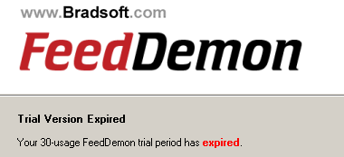

Feeddemon expired
vrijdag 9 januari 2004 | Nerdisme
Good days are over. Heeft iemand een degelijk alternatief voor deze RSS lezer? Wat is met andere woorden de NetNewsWire Lite voor Windows?
Voor één keer ga ik niet op zoek naar een crack/keygen/serial omdat Nick himself het zo mooi gevraagd heeft ;-)

David op 9 januari 2004
Hehe anders had ik iets voor jou :-)
Maar niettemin maak je een goede beslissing !